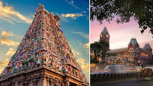
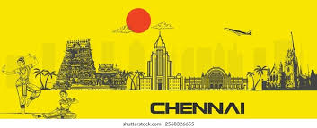
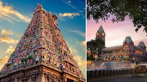
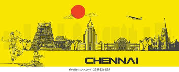

Chennai is the capital city of Tamil Nadu and one of the major cultural and economic centers of South India. It is known for its rich traditions, classical music, and Bharatanatyam dance.
The city is famous for Marina Beach, which is one of the longest urban beaches in the world. Chennai is also an important hub for the automobile and IT industries, earning the nickname “Detroit of India.” The city has beautiful temples, historic churches, and vibrant markets. Traditional South Indian food like dosa, idli, and filter coffee are very popular in Chennai. It is a city that perfectly blends heritage, culture, and modern development.